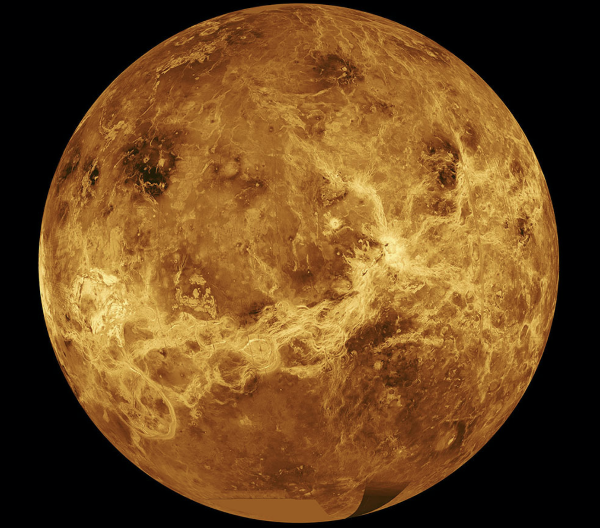

Understanding Our Solar System
Solar System
 The Solar System is the gravitationally
bound system of the Sun and the objects that orbit it, either directly
or indirectly. Of the objects that orbit the Sun directly, the largest
are the eight planets, with the remainder being smaller objects, the
dwarf planets and small Solar System bodies. Of the objects that orbit
the Sun indirectly—the moons—two are larger than the smallest planet,
Mercury. The Solar System formed 4.6 billion years ago from the
gravitational collapse of a giant interstellar molecular cloud. The
vast majority of the system's mass is in the Sun, with the majority of
the remaining mass contained in Jupiter.
The Solar System is the gravitationally
bound system of the Sun and the objects that orbit it, either directly
or indirectly. Of the objects that orbit the Sun directly, the largest
are the eight planets, with the remainder being smaller objects, the
dwarf planets and small Solar System bodies. Of the objects that orbit
the Sun indirectly—the moons—two are larger than the smallest planet,
Mercury. The Solar System formed 4.6 billion years ago from the
gravitational collapse of a giant interstellar molecular cloud. The
vast majority of the system's mass is in the Sun, with the majority of
the remaining mass contained in Jupiter.
The four smaller inner planets, Mercury,
Venus, Earth and Mars, are terrestrial planets, being primarily
composed of rock and metal. The four outer planets are giant planets,
being substantially more massive than the terrestrials. The two
largest, Jupiter and Saturn, are gas giants, being composed mainly of
hydrogen and helium; the two outermost planets, Uranus and Neptune,
are ice giants, being composed mostly of substances with relatively
high melting points compared with hydrogen and helium, called
volatiles, such as water, ammonia and methane. All eight planets have
almost circular orbits that lie within a nearly flat disc called the
ecliptic. The Solar System also contains smaller objects. The asteroid
belt, which lies between the orbits of Mars and Jupiter, mostly
contains objects composed, like the terrestrial planets, of rock and
metal. Beyond Neptune's orbit lie the Kuiper belt and scattered disc,
which are populations of trans-Neptunian objects composed mostly of
ices, and beyond them a newly discovered population of sednoids.
Within these populations, some objects are
large enough to have rounded under their own gravity, though there is
considerable debate as to how many there will prove to be. Such
objects are categorized as dwarf planets. Identified or accepted dwarf
planets include the asteroid Ceres and the trans-Neptunian objects
Pluto and Eris. In addition to these two regions, various other
small-body populations, including comets, centaurs and interplanetary
dust clouds, freely travel between regions. Six of the planets, the
six largest possible dwarf planets, and many of the smaller bodies are
orbited by natural satellites, usually termed "moons" after the Moon.
Each of the outer planets is encircled by planetary rings of dust and
other small objects.
The solar wind, a stream of charged
particles flowing outwards from the Sun, creates a bubble-like region
in the interstellar medium known as the heliosphere. The heliopause is
the point at which pressure from the solar wind is equal to the
opposing pressure of the interstellar medium; it extends out to the
edge of the scattered disc. The Oort cloud, which is thought to be the
source for long-period comets, may also exist at a distance roughly a
thousand times further than the heliosphere. The Solar System is
located in the Orion Arm, 26,000 light-years from the center of the
Milky Way galaxy.
Size and Distance
Our solar system extends much farther than
the eight planets that orbit the Sun. The solar system also includes
the Kuiper Belt that lies past Neptune's orbit. This is a sparsely
occupied ring of icy bodies, almost all smaller than the most popular
Kuiper Belt Object, dwarf planet Pluto. And beyond the fringes of the
Kuiper belt is the Oort Cloud. This giant spherical shell surrounds
our solar system. It has never been directly observed, but its
existence is predicted based on mathematical models and observations
of comets that likely originate there. The Oort Cloud is made of icy
pieces of space debris the sizes of mountains and sometimes larger,
orbiting our Sun as far as 1.6 light years away. This shell of
material is thick, extending from 5,000 astronomical units to 100,000
astronomical units. One astronomical unit (or AU) is the distance from
the Sun to Earth, or about 93 million miles (150 million kilometers).
The Oort Cloud is the boundary of the Sun's gravitational influence,
where orbiting objects can turn around and return closer to our Sun.
The Sun's heliosphere doesn't extend quite
as far. The heliosphere is the bubble created by the solar wind—a
stream of electrically charged gas blowing outward from the Sun in all
directions. The boundary where the solar wind is abruptly slowed by
pressure from interstellar gases is called the termination shock. This
edge occurs between 80-100 astronomical units. The distance from Earth
to the Sun is 1 astronomical unit [AU] (150,000,000 km; 93,000,000
mi). For comparison, the radius of the Sun is 0.0047 AU (700,000 km).
Thus, the Sun occupies 0.00001% (10−5 %) of the volume of a sphere
with a radius the size of Earth's orbit, whereas Earth's volume is
roughly one millionth (10−6) that of the Sun. Jupiter, the largest
planet, is 5.2 astronomical units (780,000,000 km) from the Sun and
has a radius of 71,000 km (0.00047 AU), whereas the most distant
planet, Neptune, is 30 AU (4.5×109 km) from the Sun. With a few
exceptions, the farther a planet or belt is from the Sun, the larger
the distance between its orbit and the orbit of the next nearer object
to the Sun. For example, Venus is approximately 0.33 AU farther out
from the Sun than Mercury, whereas Saturn is 4.3 AU out from Jupiter,
and Neptune lies 10.5 AU out from Uranus. Attempts have been made to
determine a relationship between these orbital distances, but no such
theory has been accepted.
{kind=link}
Formation
 The Solar System formed 4.568 billion years
ago from the gravitational collapse of a region within a large
molecular cloud. This initial cloud was likely several light-years
across and probably birthed several stars. As is typical of molecular
clouds, this one consisted mostly of hydrogen, with some helium, and
small amounts of heavier elements fused by previous generations of
stars. As the region that would become the Solar System, known as the
pre-solar nebula, collapsed, conservation of angular momentum caused
it to rotate faster. The centre, where most of the mass collected,
became increasingly hotter than the surrounding disc.
The Solar System formed 4.568 billion years
ago from the gravitational collapse of a region within a large
molecular cloud. This initial cloud was likely several light-years
across and probably birthed several stars. As is typical of molecular
clouds, this one consisted mostly of hydrogen, with some helium, and
small amounts of heavier elements fused by previous generations of
stars. As the region that would become the Solar System, known as the
pre-solar nebula, collapsed, conservation of angular momentum caused
it to rotate faster. The centre, where most of the mass collected,
became increasingly hotter than the surrounding disc.
As the contracting nebula rotated faster, it
began to flatten into a protoplanetary disc with a diameter of roughly
200 AU and a hot, dense protostar at the centre. The planets formed by
accretion from this disc,in which dust and gas gravitationally
attracted each other, coalescing to form ever larger bodies. Hundreds
of protoplanets may have existed in the early Solar System, but they
either merged or were destroyed, leaving the planets, dwarf planets,
and leftover minor bodies. Due to their higher boiling points, only
metals and silicates could exist in solid form in the warm inner Solar
System close to the Sun, and these would eventually form the rocky
planets of Mercury, Venus, Earth, and Mars. Because metallic elements
only comprised a very small fraction of the solar nebula, the
terrestrial planets could not grow very large. The giant planets
(Jupiter, Saturn, Uranus, and Neptune) formed further out, beyond the
frost line, the point between the orbits of Mars and Jupiter where
material is cool enough for volatile icy compounds to remain solid.
The ices that formed these planets were more plentiful than the metals
and silicates that formed the terrestrial inner planets, allowing them
to grow massive enough to capture large atmospheres of hydrogen and
helium, the lightest and most abundant elements. Leftover debris that
never became planets congregated in regions such as the asteroid belt,
Kuiper belt, and Oort cloud. The Nice model is an explanation for the
creation of these regions and how the outer planets could have formed
in different positions and migrated to their current orbits through
various gravitational interactions.
Within 50 million years, the pressure and
density of hydrogen in the centre of the protostar became great enough
for it to begin thermonuclear fusion. The temperature, reaction rate,
pressure, and density increased until hydrostatic equilibrium was
achieved: the thermal pressure equalled the force of gravity. At this
point, the Sun became a main-sequence star. The main-sequence phase,
from beginning to end, will last about 10 billion years for the Sun
compared to around two billion years for all other phases of the Sun's
pre-remnant life combined. Solar wind from the Sun created the
heliosphere and swept away the remaining gas and dust from the
protoplanetary disc into interstellar space, ending the planetary
formation process. The Sun is growing brighter; early in its
main-sequence life its brightness was 70% that of what it is today.
The Solar System will remain roughly as we know it today until the
hydrogen in the core of the Sun has been entirely converted to helium,
which will occur roughly 5 billion years from now. This will mark the
end of the Sun's main-sequence life. At this time, the core of the Sun
will contract with hydrogen fusion occurring along a shell surrounding
the inert helium, and the energy output will be much greater than at
present.
Structure and Composition
The principal component of the Solar System
is the Sun, a G2 main-sequence star that contains 99.86% of the
system's known mass and dominates it gravitationally. The Sun's four
largest orbiting bodies, the giant planets, account for 99% of the
remaining mass, with Jupiter and Saturn together comprising more than
90%. The remaining objects of the Solar System (including the four
terrestrial planets, the dwarf planets, moons, asteroids, and comets)
together comprise less than 0.002% of the Solar System's total mass.
Most large objects in orbit around the Sun lie near the plane of
Earth's orbit, known as the ecliptic. The planets are very close to
the ecliptic, whereas comets and Kuiper belt objects are frequently at
significantly greater angles to it. As a result of the formation of
the Solar System planets, and most other objects, orbit the Sun in the
same direction that the Sun is rotating (counter-clockwise, as viewed
from above Earth's north pole). There are exceptions, such as Halley's
Comet. Also most of the larger moons orbit their planets in this
prograde direction and most larger objects rotate themselves in the
same direction (with Venus being a notable retrograde exception).
The overall structure of the charted regions
of the Solar System consists of the Sun, four relatively small inner
planets surrounded by a belt of mostly rocky asteroids, and four giant
planets surrounded by the Kuiper belt of mostly icy objects.
Astronomers sometimes informally divide this structure into separate
regions. The inner Solar System includes the four terrestrial planets
and the asteroid belt. The outer Solar System is beyond the asteroids,
including the four giant planets. Since the discovery of the Kuiper
belt, the outermost parts of the Solar System are considered a
distinct region consisting of the objects beyond Neptune. Most of the
planets in the Solar System have secondary systems of their own, being
orbited by planetary objects called natural satellites, or moons (two
of which, Titan and Ganymede, are larger than the planet Mercury),
and, in the case of the four giant planets, by planetary rings, thin
bands of tiny particles that orbit them in unison. Most of the largest
natural satellites are in synchronous rotation, with one face
permanently turned toward their parent.
Kepler's laws of planetary motion describe
the orbits of objects about the Sun. Following Kepler's laws, each
object travels along an ellipse with the Sun at one focus. Objects
closer to the Sun (with smaller semi-major axes) travel more quickly
because they are more affected by the Sun's gravity. On an elliptical
orbit, a body's distance from the Sun varies over the course of its
year. A body's closest approach to the Sun is called its perihelion,
whereas its most distant point from the Sun is called its aphelion.
The orbits of the planets are nearly circular, but many comets,
asteroids, and Kuiper belt objects follow highly elliptical orbits.
The positions of the bodies in the Solar System can be predicted using
numerical models. Although the Sun dominates the system by mass, it
accounts for only about 2% of the angular momentum.The planets,
dominated by Jupiter, account for most of the rest of the angular
momentum due to the combination of their mass, orbit, and distance
from the Sun, with a possibly significant contribution from comets.
The Sun, which comprises nearly all the
matter in the Solar System, is composed of roughly 98% hydrogen and
helium. Jupiter and Saturn, which comprise nearly all the remaining
matter, are also primarily composed of hydrogen and helium. A
composition gradient exists in the Solar System, created by heat and
light pressure from the Sun; those objects closer to the Sun, which
are more affected by heat and light pressure, are composed of elements
with high melting points. Objects farther from the Sun are composed
largely of materials with lower melting points. The boundary in the
Solar System beyond which those volatile substances could condense is
known as the frost line, and it lies at roughly 5 AU from the Sun.
The objects of the inner Solar System are
composed mostly of rock, the collective name for compounds with high
melting points, such as silicates, iron or nickel, that remained solid
under almost all conditions in the protoplanetary nebula. Jupiter and
Saturn are composed mainly of gases, the astronomical term for
materials with extremely low melting points and high vapour pressure,
such as hydrogen, helium, and neon, which were always in the gaseous
phase in the nebula. Ices, like water, methane, ammonia, hydrogen
sulfide, and carbon dioxide, have melting points up to a few hundred
kelvins. They can be found as ices, liquids, or gases in various
places in the Solar System, whereas in the nebula they were either in
the solid or gaseous phase. Icy substances comprise the majority of
the satellites of the giant planets, as well as most of Uranus and
Neptune (the so-called "ice giants") and the numerous small objects
that lie beyond Neptune's orbit.Together, gases and ices are referred
to as volatiles.
{kind=link}
Sun
 The Sun is the Solar System's star and by far
its most massive component. Its large mass (332,900 Earth masses),
which comprises 99.86% of all the mass in the Solar System, produces
temperatures and densities in its core high enough to sustain nuclear
fusion of hydrogen into helium, making it a main-sequence star. This
releases an enormous amount of energy, mostly radiated into space as
electromagnetic radiation peaking in visible light. The Sun is a
G2-type main-sequence star. Hotter main-sequence stars are more
luminous. The Sun's temperature is intermediate between that of the
hottest stars and that of the coolest stars. Stars brighter and hotter
than the Sun are rare, whereas substantially dimmer and cooler stars,
known as red dwarfs, make up 85% of the stars in the Milky Way. The
Sun is a population I star; it has a higher abundance of elements
heavier than hydrogen and helium ("metals" in astronomical parlance)
than the older population II stars. Elements heavier than hydrogen and
helium were formed in the cores of ancient and exploding stars, so the
first generation of stars had to die before the Universe could be
enriched with these atoms. The oldest stars contain few metals,
whereas stars born later have more. This high metallicity is thought
to have been crucial to the Sun's development of a planetary system
because the planets form from the accretion of "metals"
The Sun is the Solar System's star and by far
its most massive component. Its large mass (332,900 Earth masses),
which comprises 99.86% of all the mass in the Solar System, produces
temperatures and densities in its core high enough to sustain nuclear
fusion of hydrogen into helium, making it a main-sequence star. This
releases an enormous amount of energy, mostly radiated into space as
electromagnetic radiation peaking in visible light. The Sun is a
G2-type main-sequence star. Hotter main-sequence stars are more
luminous. The Sun's temperature is intermediate between that of the
hottest stars and that of the coolest stars. Stars brighter and hotter
than the Sun are rare, whereas substantially dimmer and cooler stars,
known as red dwarfs, make up 85% of the stars in the Milky Way. The
Sun is a population I star; it has a higher abundance of elements
heavier than hydrogen and helium ("metals" in astronomical parlance)
than the older population II stars. Elements heavier than hydrogen and
helium were formed in the cores of ancient and exploding stars, so the
first generation of stars had to die before the Universe could be
enriched with these atoms. The oldest stars contain few metals,
whereas stars born later have more. This high metallicity is thought
to have been crucial to the Sun's development of a planetary system
because the planets form from the accretion of "metals"
The Sun currently fuses about 600 million
tons of hydrogen into helium every second, converting 4 million tons
of matter into energy every second as a result. This energy, which can
take between 10,000 and 170,000 years to escape from its core, is the
source of the Sun's light and heat. When hydrogen fusion in its core
has diminished to the point at which the Sun is no longer in
hydrostatic equilibrium, its core will undergo a marked increase in
density and temperature while its outer layers expand, eventually
transforming the Sun into a red giant. It is calculated that the Sun
will become sufficiently large to engulf the current orbits of Mercury
and Venus, and render Earth uninhabitable – but not for about five
billion years. After this, it will shed its outer layers and become a
dense type of cooling star known as a white dwarf, and no longer
produce energy by fusion, but still glow and give off heat from its
previous fusion.
Inner and Outer Planets
The four terrestrial or inner planets have
dense, rocky compositions, few or no moons, and no ring systems. They
are composed largely of refractory minerals, such as the
silicates—which form their crusts and mantles—and metals, such as iron
and nickel, which form their cores. Three of the four inner planets
(Venus, Earth and Mars) have atmospheres substantial enough to
generate weather; all have impact craters and tectonic surface
features, such as rift valleys and volcanoes. The term inner planet
should not be confused with inferior planet, which designates those
planets that are closer to the Sun than Earth is (i.e. Mercury and
Venus).
The four outer planets, or giant planets
(sometimes called Jovian planets), collectively make up 99% of the
mass known to orbit the Sun.[g] Jupiter and Saturn are together more
than 400 times the mass of Earth and consist overwhelmingly of
hydrogen and helium. Uranus and Neptune are far less massive—less than
20 Earth masses each—and are composed primarily of ices. For these
reasons, some astronomers suggest they belong in their own category,
ice giants.[98] All four giant planets have rings, although only
Saturn's ring system is easily observed from Earth. The term superior
planet designates planets outside Earth's orbit and thus includes both
the outer planets and Mars.
Mercury
Mercury (0.4 AU from the Sun) is the closest
planet to the Sun and on average, all seven other planets. The
smallest planet in the Solar System, Mercury has no natural
satellites. Besides impact craters, its only known geological features
are lobed ridges or rupes that were probably produced by a period of
contraction early in its history. Mercury's very tenuous atmosphere
consists of atoms blasted off its surface by the solar wind. Its
relatively large iron core and thin mantle have not yet been
adequately explained. Hypotheses include that its outer layers were
stripped off by a giant impact, or that it was prevented from fully
accreting by the young Sun's energy. Its orbit around the Sun takes
87.97 days, the shortest of all the planets in the Solar System. It is
named after the Roman deity Mercury, the messenger of the gods. Like
Venus, Mercury orbits the Sun within Earth's orbit as an inferior
planet, and its apparent distance from the Sun as viewed from Earth
never exceeds 28°. This proximity to the Sun means the planet can only
be seen near the western horizon after sunset or eastern horizon
before sunrise, usually in twilight.
At this time, it may appear as a bright
star-like object, but is often far more difficult to observe than
Venus. The planet telescopically displays the complete range of
phases, similar to Venus and the Moon, as it moves in its inner orbit
relative to Earth, which recurs over its synodic period of
approximately 116 days. Mercury rotates in a way that is unique in the
Solar System. It is tidally locked with the Sun in a 3:2 spin–orbit
resonance, meaning that relative to the fixed stars, it rotates on its
axis exactly three times for every two revolutions it makes around the
Sun. As seen from the Sun, in a frame of reference that rotates with
the orbital motion, it appears to rotate only once every two Mercurian
years.
An observer on Mercury would therefore see
only one day every two Mercurian years. Mercury's axis has the
smallest tilt of any of the Solar System's planets (about 1⁄30
degree). Its orbital eccentricity is the largest of all known planets
in the Solar System; at perihelion, Mercury's distance from the Sun is
only about two-thirds (or 66%) of its distance at aphelion. Mercury's
surface appears heavily cratered and is similar in appearance to the
Moon's, indicating that it has been geologically inactive for billions
of years. Having almost no atmosphere to retain heat, it has surface
temperatures that vary diurnally more than on any other planet in the
Solar System, ranging from 100 K (−173 °C; −280 °F) at night to 700 K
(427 °C; 800 °F) during the day across the equatorial regions.[18] The
polar regions are constantly below 180 K (−93 °C; −136 °F).
Source:
wikipedia.com
{kind=link}
Venus

Venus (0.7 AU from the Sun) is close in size
to Earth and like Earth, has a thick silicate mantle around an iron
core, a substantial atmosphere, and evidence of internal geological
activity. It is much drier than Earth, and its atmosphere is ninety
times as dense. Venus has no natural satellites. No definitive
evidence of current geological activity has been detected on Venus,
but it has no magnetic field that would prevent depletion of its
substantial atmosphere, which suggests that its atmosphere is being
replenished by volcanic eruptions.
Venus is the second planet from the Sun. It
is named after the Roman goddess of love and beauty. As the
second-brightest natural object in the night sky after the Moon, Venus
can cast shadows and, rarely, is visible to the naked eye in broad
daylight.[16][17] Venus lies within Earth's orbit, and so never
appears to venture far from the Sun, either setting in the west just
after dusk or rising in the east a bit before dawn. Venus orbits the
Sun every 224.7 Earth days. With a rotation period of 243 Earth days,
it takes longer to rotate about its axis than any planet in the Solar
System and does so in the opposite direction to all but Uranus
(meaning the Sun rises in the west and sets in the east). Venus does
not have any moons, a distinction it shares only with Mercury among
planets in the Solar System.
Venus is a terrestrial planet and is
sometimes called Earth's "sister planet" because of their similar
size, mass, proximity to the Sun, and bulk composition. It is
radically different from Earth in other respects. It has the densest
atmosphere of the four terrestrial planets, consisting of more than
96% carbon dioxide. The atmospheric pressure at the planet's surface
is 92 times that of Earth, or roughly the pressure found 900 m (3,000
ft) underwater on Earth. Venus is by far the hottest planet in the
Solar System, with a mean surface temperature of 735 K (462 °C; 863
°F), even though Mercury is closer to the Sun. Venus is shrouded by an
opaque layer of highly reflective clouds of sulfuric acid, preventing
its surface from being seen from space in visible light. It may have
had water oceans in the past, but these would have vaporized as the
temperature rose due to a runaway greenhouse effect. The water has
probably photodissociated, and the free hydrogen has been swept into
interplanetary space by the solar wind because of the lack of a
planetary magnetic field. Venus's surface is a dry desertscape
interspersed with slab-like rocks and is periodically resurfaced by
volcanism.
Source:
wikipedia.com
{kind=link}
Earth
Earth (1 AU from the Sun) is the largest and
densest of the inner planets, the only one known to have current
geological activity, and the only place where life is known to exist.
Its liquid hydrosphere is unique among the terrestrial planets, and it
is the only planet where plate tectonics has been observed. Earth's
atmosphere is radically different from those of the other planets,
having been altered by the presence of life to contain 21% free
oxygen. It has one natural satellite, the Moon, the only large
satellite of a terrestrial planet in the Solar System.
It is the third planet from the Sun and the
only astronomical object known to harbor life. According to
radiometric dating and other evidence, Earth formed over 4.5 billion
years ago. Earth's gravity interacts with other objects in space,
especially the Sun and the Moon, which is Earth's only natural
satellite. Earth orbits around the Sun in 365.256 solar days, a period
known as an Earth sidereal year. During this time, Earth rotates about
its axis 366.256 times, that is, a sidereal year has 366.256 sidereal
days. Earth's axis of rotation is tilted with respect to its orbital
plane, producing seasons on Earth. The gravitational interaction
between Earth and the Moon causes tides, stabilizes Earth's
orientation on its axis, and gradually slows its rotation. Earth is
the densest planet in the Solar System and the largest and most
massive of the four rocky planets.
Earth's outer layer (lithosphere) is divided
into several rigid tectonic plates that migrate across the surface
over many millions of years. About 29% of Earth's surface is land
consisting of continents and islands. The remaining 71% is covered
with water, mostly by oceans but also lakes, rivers and other fresh
water, which all together constitute the hydrosphere. The majority of
Earth's polar regions are covered in ice, including the Antarctic ice
sheet and the sea ice of the Arctic ice pack. Earth's interior remains
active with a solid iron inner core, a liquid outer core that
generates Earth's magnetic field, and a convecting mantle that drives
plate tectonics.
Source:
wikipedia.com
{kind=link}
Mars
 Mars (1.5 AU from the Sun) is smaller than
Earth and Venus. It has an atmosphere of mostly carbon dioxide with a
surface pressure of 6.1 millibars (roughly 0.6% of that of Earth). Its
surface, peppered with vast volcanoes, such as Olympus Mons, and rift
valleys, such as Valles Marineris, shows geological activity that may
have persisted until as recently as 2 million years ago. Its red
colour comes from iron oxide (rust) in its soil. Mars has two tiny
natural satellites (Deimos and Phobos) thought to be either captured
asteroids, or ejected debris from a massive impact early in Mars's
history.
Mars (1.5 AU from the Sun) is smaller than
Earth and Venus. It has an atmosphere of mostly carbon dioxide with a
surface pressure of 6.1 millibars (roughly 0.6% of that of Earth). Its
surface, peppered with vast volcanoes, such as Olympus Mons, and rift
valleys, such as Valles Marineris, shows geological activity that may
have persisted until as recently as 2 million years ago. Its red
colour comes from iron oxide (rust) in its soil. Mars has two tiny
natural satellites (Deimos and Phobos) thought to be either captured
asteroids, or ejected debris from a massive impact early in Mars's
history.
It is the fourth planet from the Sun and the
second-smallest planet in the Solar System after Mercury. In English,
Mars carries the name of the Roman god of war, and is often referred
to as the 'Red Planet'. The latter refers to the effect of the iron
oxide prevalent on Mars' surface, which gives it a reddish appearance
distinctive among the astronomical bodies visible to the naked eye.
Mars is a terrestrial planet with a thin atmosphere, having surface
features reminiscent both of the impact craters of the Moon and the
valleys, deserts, and polar ice caps of Earth. The days and seasons
are likewise comparable to those of Earth, because the rotational
period as well as the tilt of the rotational axis relative to the
ecliptic plane are very similar. Mars is the site of Olympus Mons, the
largest volcano and highest known mountain on any planet in the Solar
System, and of Valles Marineris, one of the largest canyons in the
Solar System. The smooth Borealis basin in the northern hemisphere
covers 40% of the planet and may be a giant impact feature. Mars has
two moons, Phobos and Deimos, which are small and irregularly shaped.
These may be captured asteroids, similar to 5261 Eureka, a Mars
trojan.
Mars has been explored by numerous unmanned
spacecraft. Mariner 4, launched by NASA on November 28, 1964, was the
first spacecraft to visit Mars, making its closest approach to the
planet on July 15, 1965. Mariner 4 detected the weak Martian radiation
belt, measured at about 0.1% that of Earth’s, and captured the first
images of another planet from deep space. On July 20, 1976, Viking 1
performed the first successful landing on the Martian surface.
Although the Soviet Mars 3 spacecraft achieved a soft landing in
December 1971, contact was lost with its lander seconds after
touchdown. On July 4, 1997, the Mars Pathfinder spacecraft landed on
Mars, and on July 5 released its rover, Sojourner, the first robotic
rover to operate on Mars. Pathfinder was followed by the Mars
Exploration Rovers, Spirit and Opportunity, which landed on Mars in
January 2004 and operated until March 22, 2010 and June 10, 2018,
respectively. The Mars Express orbiter, the first European Space
Agency spacecraft to visit Mars, arrived in orbit on December 25,
2003. On September 24, 2014, the Indian Space Research Organization
became the fourth space agency to visit Mars, when its maiden
interplanetary mission, the Mars Orbiter Mission spacecraft,
successfully arrived in orbit.
Source:
wikipedia.com
Jupiter
 Jupiter (5.2 AU), is 2.5 times the mass of
all the other planets put together. It is composed largely of hydrogen
and helium. Jupiter's strong internal heat creates semi-permanent
features in its atmosphere, such as cloud bands and the Great Red
Spot. Jupiter has 79 known satellites. The four largest, Ganymede,
Callisto, Io, and Europa, show similarities to the terrestrial
planets, such as volcanism and internal heating. Ganymede, the largest
satellite in the Solar System, is larger than Mercury.
Jupiter (5.2 AU), is 2.5 times the mass of
all the other planets put together. It is composed largely of hydrogen
and helium. Jupiter's strong internal heat creates semi-permanent
features in its atmosphere, such as cloud bands and the Great Red
Spot. Jupiter has 79 known satellites. The four largest, Ganymede,
Callisto, Io, and Europa, show similarities to the terrestrial
planets, such as volcanism and internal heating. Ganymede, the largest
satellite in the Solar System, is larger than Mercury.
It is the fifth planet from the Sun and the
largest in the Solar System. It is a gas giant with a mass
one-thousandth that of the Sun, but two-and-a-half times that of all
the other planets in the Solar System combined. Jupiter is one of the
brightest objects visible to the naked eye in the night sky, and has
been known to ancient civilizations since before recorded history. It
is named after the Roman god Jupiter. When viewed from Earth, Jupiter
can be bright enough for its reflected light to cast shadows, and is
on average the third-brightest natural object in the night sky after
the Moon and Venus.
Jupiter is primarily composed of hydrogen
with a quarter of its mass being helium, though helium comprises only
about a tenth of the number of molecules. It may also have a rocky
core of heavier elements, but like the other giant planets, Jupiter
lacks a well-defined solid surface. Because of its rapid rotation, the
planet's shape is that of an oblate spheroid (it has a slight but
noticeable bulge around the equator). The outer atmosphere is visibly
segregated into several bands at different latitudes, resulting in
turbulence and storms along their interacting boundaries. A prominent
result is the Great Red Spot, a giant storm that is known to have
existed since at least the 17th century when it was first seen by
telescope. Surrounding Jupiter is a faint planetary ring system and a
powerful magnetosphere. Jupiter has 79 known moons, including the four
large Galilean moons discovered by Galileo Galilei in 1610. Ganymede,
the largest of these, has a diameter greater than that of the planet
Mercury.
Pioneer 10 was the first spacecraft to visit
Jupiter, making its closest approach to the planet on December 4,
1973; Pioneer 10 identified plasma in Jupiter's magnetic field and
also found that Jupiter's magnetic tail was nearly 800 million
kilometers long, covering the entire distance to Saturn. Jupiter has
been explored on a number of occasions by robotic spacecraft,
beginning with the Pioneer and Voyager flyby missions from 1973 to
1979, and later by the Galileo orbiter, which arrived at Jupiter in
1995. In late February 2007, Jupiter was visited by the New Horizons
probe, which used Jupiter's gravity to increase its speed and bend its
trajectory en route to Pluto. The latest probe to visit the planet is
Juno, which entered into orbit around Jupiter on July 4, 2016. Future
targets for exploration in the Jupiter system include the probable
ice-covered liquid ocean of its moon Europa.
Source:
wikipedia.com
Saturn
Saturn (9.5 AU), distinguished by its
extensive ring system, has several similarities to Jupiter, such as
its atmospheric composition and magnetosphere. Although Saturn has 60%
of Jupiter's volume, it is less than a third as massive, Saturn is the
only planet of the Solar System that is less dense than water. The
rings of Saturn are made up of small ice and rock particles. Saturn
has 82 confirmed satellites composed largely of ice. Two of these,
Titan and Enceladus, show signs of geological activity. Titan, the
second-largest moon in the Solar System, is larger than Mercury and
the only satellite in the Solar System with a substantial atmosphere.
It is the sixth planet from the Sun and the
second-largest in the Solar System, after Jupiter. It is a gas giant
with an average radius of about nine times that of Earth. It only has
one-eighth the average density of Earth; however, with its larger
volume, Saturn is over 95 times more massive. Saturn is named after
the Roman god of wealth and agriculture; its astronomical symbol (♄)
represents the god's sickle. Saturn's interior is most likely composed
of a core of iron–nickel and rock (silicon and oxygen compounds). Its
core is surrounded by a deep layer of metallic hydrogen, an
intermediate layer of liquid hydrogen and liquid helium, and finally a
gaseous outer layer. Saturn has a pale yellow hue due to ammonia
crystals in its upper atmosphere. An electrical current within the
metallic hydrogen layer is thought to give rise to Saturn's planetary
magnetic field, which is weaker than the Earth's, but has a magnetic
moment 580 times that of Earth due to Saturn's larger size.
Saturn's magnetic field strength is around
one-twentieth of Jupiter's. The outer atmosphere is generally bland
and lacking in contrast, although long-lived features can appear. Wind
speeds on Saturn can reach 1,800 km/h (1,100 mph; 500 m/s), higher
than on Jupiter, but not as high as those on Neptune. In January 2019,
astronomers reported that a day on the planet Saturn has been
determined to be 10h 33m 38s + 1m 52s − 1m 19s , based on studies of
the planet's C Ring. The planet's most famous feature is its prominent
ring system, which is composed mostly of ice particles, with a smaller
amount of rocky debris and dust. At least 82 moons are known to orbit
Saturn, of which 53 are officially named; this does not include the
hundreds of moonlets in its rings. Titan, Saturn's largest moon, and
the second-largest in the Solar System, is larger than the planet
Mercury, although less massive, and is the only moon in the Solar
System to have a substantial atmosphere.
Source:
wikipedia.com
{kind=link}
Uranus
 Uranus (19.2 AU), is the lightest of the
outer planets. Uniquely among the planets, it orbits the Sun on its
side; its axial tilt is over ninety degrees to the ecliptic. It has a
much colder core than the other giant planets and radiates very little
heat into space. Uranus has 27 known satellites, the largest ones
being Titania, Oberon, Umbriel, Ariel, and Miranda.
Uranus (19.2 AU), is the lightest of the
outer planets. Uniquely among the planets, it orbits the Sun on its
side; its axial tilt is over ninety degrees to the ecliptic. It has a
much colder core than the other giant planets and radiates very little
heat into space. Uranus has 27 known satellites, the largest ones
being Titania, Oberon, Umbriel, Ariel, and Miranda.
It is the seventh planet from the Sun. It has
the third-largest planetary radius and fourth-largest planetary mass
in the Solar System. Uranus is similar in composition to Neptune, and
both have bulk chemical compositions which differ from that of the
larger gas giants Jupiter and Saturn. For this reason, scientists
often classify Uranus and Neptune as "ice giants" to distinguish them
from the gas giants. Uranus' atmosphere is similar to Jupiter's and
Saturn's in its primary composition of hydrogen and helium, but it
contains more "ices" such as water, ammonia, and methane, along with
traces of other hydrocarbons. It has the coldest planetary atmosphere
in the Solar System, with a minimum temperature of 49 K (−224 °C; −371
°F), and has a complex, layered cloud structure with water thought to
make up the lowest clouds and methane the uppermost layer of clouds.
The interior of Uranus is mainly composed of
ices and rock. Like the other giant planets, Uranus has a ring system,
a magnetosphere, and numerous moons. The Uranian system has a unique
configuration because its axis of rotation is tilted sideways, nearly
into the plane of its solar orbit. Its north and south poles,
therefore, lie where most other planets have their equators. In 1986,
images from Voyager 2 showed Uranus as an almost featureless planet in
visible light, without the cloud bands or storms associated with the
other giant planets. Voyager 2 remains the only spacecraft to visit
the planet. Observations from Earth have shown seasonal change and
increased weather activity as Uranus approached its equinox in 2007.
Wind speeds can reach 250 metres per second (900 km/h; 560 mph).
Source:
wikipedia.com
Neptune
 Neptune (30.1 AU), though slightly smaller
than Uranus, is more massive and hence more dense. It radiates more
internal heat, but not as much as Jupiter or Saturn. Neptune has 14
known satellites. The largest, Triton, is geologically active, with
geysers of liquid nitrogen. Triton is the only large satellite with a
retrograde orbit. Neptune is accompanied in its orbit by several minor
planets, termed Neptune trojans, that are in 1:1 resonance with it.
Neptune (30.1 AU), though slightly smaller
than Uranus, is more massive and hence more dense. It radiates more
internal heat, but not as much as Jupiter or Saturn. Neptune has 14
known satellites. The largest, Triton, is geologically active, with
geysers of liquid nitrogen. Triton is the only large satellite with a
retrograde orbit. Neptune is accompanied in its orbit by several minor
planets, termed Neptune trojans, that are in 1:1 resonance with it.
It is the eighth and farthest known planet
from the Sun in the Solar System. In the Solar System, it is the
fourth-largest planet by diameter, the third-most-massive planet, and
the densest giant planet. Neptune is 17 times the mass of Earth,
slightly more massive than its near-twin Uranus. Neptune is denser and
physically smaller than Uranus because its greater mass causes more
gravitational compression of its atmosphere. Neptune orbits the Sun
once every 164.8 years at an average distance of 30.1 au (4.5 billion
km; 2.8 billion mi). It is named after the Roman god of the sea and
has the astronomical symbol ♆, a stylised version of the god Neptune's
trident. Neptune is not visible to the unaided eye and is the only
planet in the Solar System found by mathematical prediction rather
than by empirical observation.
Unexpectedx changes in the orbit of Uranus
led Alexis Bouvard to deduce that its orbit was subject to
gravitational perturbation by an unknown planet. The position of
Neptune was subsequently calculated from Bouvard's observations,
independently, by John Couch Adams and Urbain Le Verrier after his
death. Neptune was subsequently observed with a telescope on 23
September 1846 by Johann Galle within a degree of the position
predicted by Le Verrier. Its largest moon, Triton, was discovered
shortly thereafter, though none of the planet's remaining 13 known
moons were located telescopically until the 20th century. The planet's
distance from Earth gives it a very small apparent size, making it
challenging to study with Earth-based telescopes. Neptune was visited
by Voyager 2, when it flew by the planet on 25 August 1989; Voyager 2
remains the only spacecraft to visit Neptune.
The advent of the Hubble Space Telescope and
large ground-based telescopes with adaptive optics has recently
allowed for additional detailed observations from afar. Like Jupiter
and Saturn, Neptune's atmosphere is composed primarily of hydrogen and
helium, along with traces of hydrocarbons and possibly nitrogen,
though it contains a higher proportion of "ices" such as water,
ammonia and methane. However, similar to Uranus, its interior is
primarily composed of ices and rock; Uranus and Neptune are normally
considered "ice giants" to emphasise this distinction. Traces of
methane in the outermost regions in part account for the planet's blue
appearance.
Source:
wikipedia.com